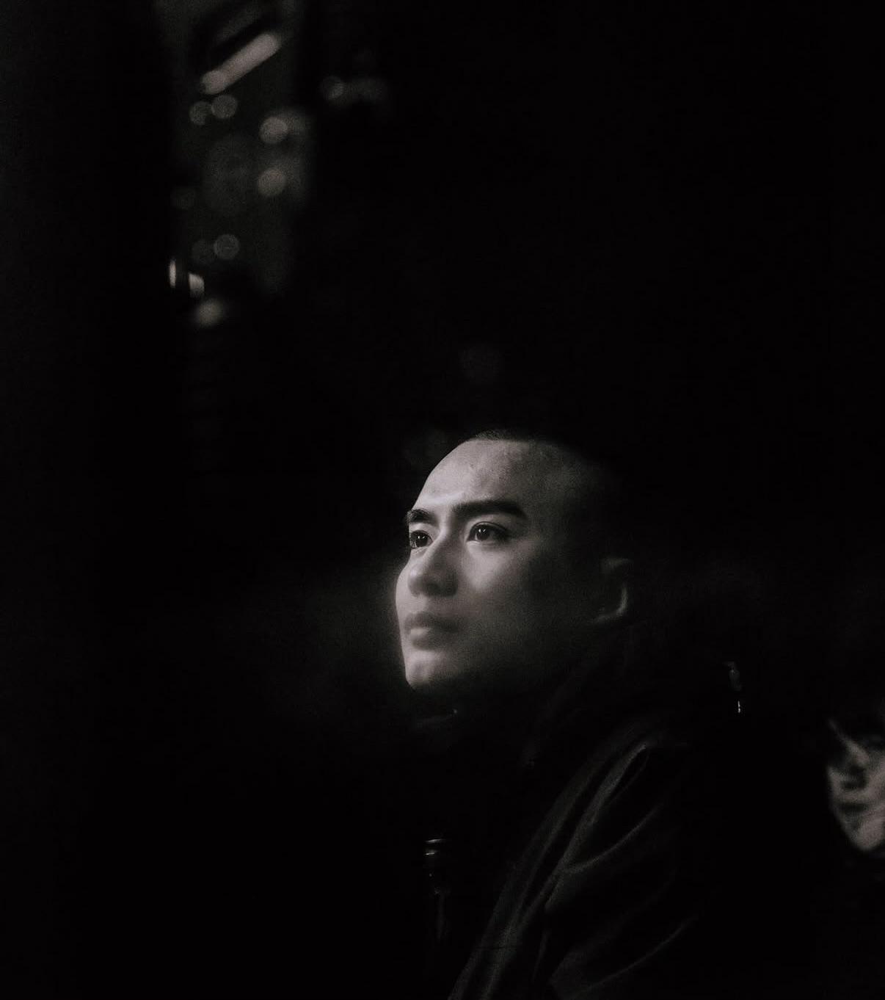

掌握敘事，剪出觀看動力
熟悉 YouTube 內容的開場鉤子、段落安排與情緒鋪陳。依創作者風格調整節奏，讓重點清楚、笑點到位、故事自然推進。
六年影視攝影與剪輯經驗。從 YouTube 長片、商業短影音到 AI 短劇，把素材剪成觀眾願意看下去的內容。

從素材整理，到成片的每一個細節。
熟悉 YouTube 內容的開場鉤子、段落安排與情緒鋪陳。依創作者風格調整節奏，讓重點清楚、笑點到位、故事自然推進。
結合攝影、剪輯、字幕、聲音與特效合成，掌握構圖、光線和鏡頭銜接，將拍攝素材整合成一致的視覺表現。
曾於影音公司單月剪輯逾百支影片，熟悉多專案並行、素材整理、版本修改與交件流程，能配合不同產業與內容需求。
YouTube / 商業短影音 / AI 短劇
擁有六年影視製作經驗，專注攝影與剪輯。曾任職影音公司，剪輯不同類型的 YouTube 網紅影片，並長期擔任台灣知名 YouTuber 的御用剪輯師，累積三年合作經驗。
除了剪輯技術，也重視內容目的與觀眾感受。從開場吸引力、敘事節奏到聲音與字幕設計，依照不同創作者及品牌的風格，完成適合平台觀看的影片。
長期合作剪輯，掌握創作者風格與頻道內容節奏。
配合品牌與商業企劃，製作不同產業的影音內容。
單月剪輯逾百支影片，涵蓋多類型網紅與社群內容。
依專案需求完成內容剪輯與後製。
具備 AI 動畫生成與一條龍製作經驗，熟悉各行各業短劇從前期規劃、角色與場景生成，到鏡頭銜接、動畫製作與剪輯後製的完整流程。重視角色一致性、畫面連貫與敘事節奏。